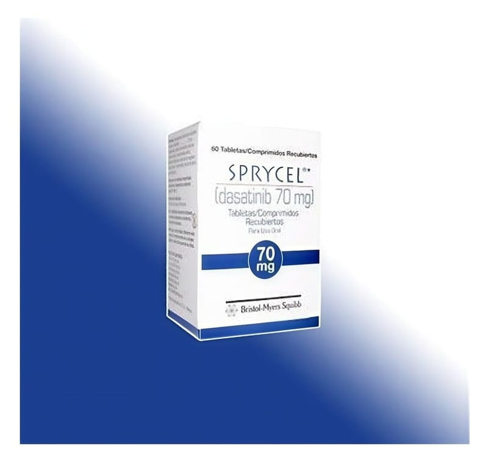

Sprycel 70 mg 60 Film Kaplı Tablet

Ne için kullanılır
KT · Bölüm 1SPRYCEL, dasatinib adlı etkin maddeyi içeren ve ağız yoluyla kullanılan bir ilaçtır.
SPRYCEL, beyaz-beyazımsı, bikonveks, yuvarlak bir tarafında “BMS” diğer tarafında “524” yazılı film kaplı tablettir.
SPRYCEL 60 film kaplı tablet içeren çocukların açamayacağı polipropilen kapaklı yüksek dansiteli polietilen (HDPE) şişe ambalajdadır. Her kartonda bir şişe vardır.
SPRYCEL, kronik miyeloid lösemisi olan (KML) yetişkinler, adölesanlar ve en az 1 yaşındaki çocuklar için bir tedavidir. Lösemi, akyuvar hücrelerinin bir kanser şeklidir. Bu akyuvar hücreleri genelde, vücudun enfeksiyonlara karşı savaşmasına yardımcı olur. KML’li kişilerde, granülosit adı verilen akyuvar hücreleri kontrol dışı büyümeye başlarlar. SPRYCEL, bu lösemili hücrelerin büyümesini engeller. Bu ilacı kullanmaya başlamadan önce bu KULLANMA TALİMATINI dikkatlice okuyunuz, çünkü sizin için önemli bilgiler içermektedir. •Bu kullanma talimatını saklayınız. Daha sonra tekrar okumaya ihtiyaç duyabilirsiniz. •Eğer ilave sorularınız olursa, lütfen doktorunuza veya eczacınıza danışınız. •Bu ilaç kişisel olarak size reçetelendirilmiştir, başkalarına vermeyiniz. •Bu ilacın kullanımı sırasında doktora veya hastaneye gittiğinizde doktorunuza bu ilacı kullandığınızı söyleyiniz. •Bu talimatta yazılanlara aynen uyunuz. İlaç hakkında size önerilen dozun dışında yüksek veya düşük doz kullanmayınız.
SPRYCEL aynı zamanda, Philadelphia kromozom pozitif (Ph+) akut lenfoblastik lösemili (ALL) ve lenfoid blast KML’ li ama daha önceki tedavilerden fayda görmeyen yetişkinler, adölesanlar ve en az 1 yaşındaki çocuklar için de bir tedavidir. ALL’a sahip kişilerde, lenfosit adı verilen akyuvar hücreleri çok çabuk çoğalırlar ve çok uzun yaşarlar. SPRYCEL, bu lösemili hücrelerin büyümesini engeller.